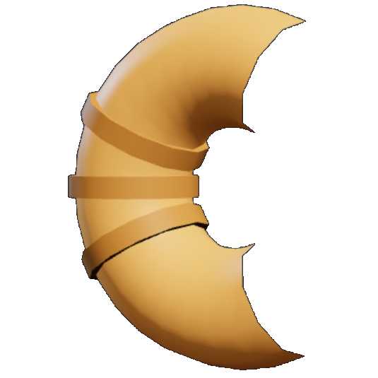
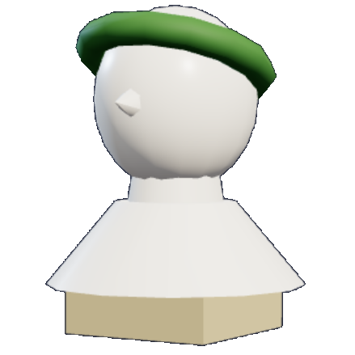

Buses are solid walls — change lane, you cannot jump those.
Each city has its own collectible, worth 25 points each.

Paris
RomeReach the end of a street and you get 60 seconds to rebuild that city's landmark. Tap the glowing blocks — they are the ones you may place next. Build from the ground up: a block cannot go on before whatever it rests on. Blocks in the same course glow together and may be placed in any order.
Drag anywhere to spin the view. Finishing early is worth 50 points per second left.
Complete a city's landmark to earn a star and unlock the next street. Three stars unlocks the next city.